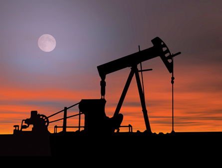

Module 5—Hydrocarbons and the Petroleum Industry
 Big Picture
Big Picture

© Stephen Coburn/shutterstock
As a resident of Alberta you have probably seen many pumpjacks. You might have wondered what pumpjacks are doing in the middle of fields. A pumpjack is installed into an oil well (a hole drilled deep into the ground) to mechanically lift an oil and water mixture out of the ground.
Each stroke of the pumpjack can lift between five and 30 litres of the oil and water mixture. Once the mixture is brought to the surface, the process of refining the crude oil can begin.
Crude oil is one type of fossil fuel. The number of pumpjacks you see in fields indicates that Alberta has a lot of crude oil. You may also have seen evidence of other types of fossil fuel resources being developed. For example, you may have seen evidence of coal mining and natural gas wells.
The abundance of fossil fuel resources in Alberta drives Alberta’s economy and is at the core of many industries in Alberta. The recovery and refinement of fossil fuels makes Alberta a wealthy province.
As important as fossil fuels are to Alberta’s economy, there have always been concerns about the impact the development of fossil fuel resources has on the environment. Does the extraction and refinement of fossil fuels cause irreparable damage to the environment?
 Assessment in This Module
Assessment in This Module
Each lesson contains a range of activities and assessment options. These include assignments, labs, and Self-Check, Try This, Discuss, Reflect and Connect, and Reflect on the Big Picture activities. Instructions will be provided for each of these activities so that you can appropriately focus your time and effort. Your teacher will tell you which assessment options to complete and which responses to submit for marks or feedback. Remember to save all of your work in your Chemistry 30 folder.
In the Module 5 Assessment you will prepare a list of hydrocarbons. You will identify the importance of each hydrocarbon from more than just a scientific perspective.
You may wish to look at the Module Assessment and the Unit Assessment before starting Lesson 1.